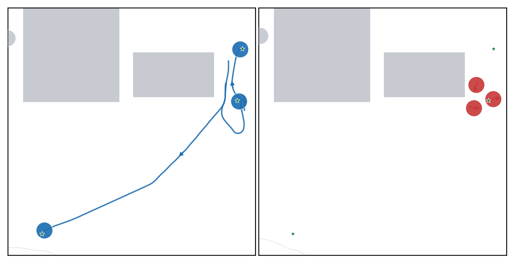
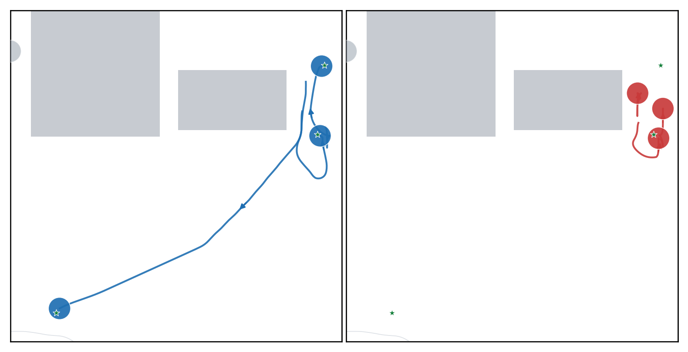
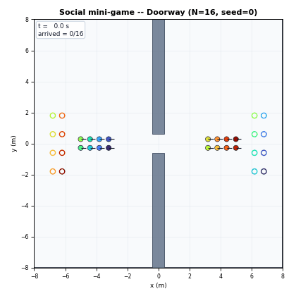
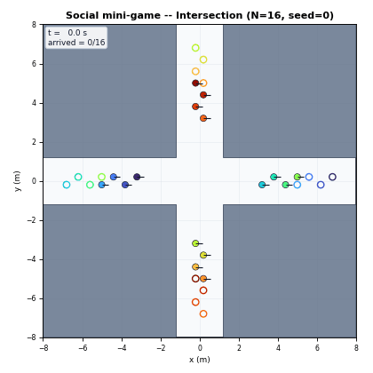

CLEAR: Certified Constraint-Compatible Motion
for Multi-Robot Passage
CLEAR executions at N = 20: Free, Swap, Circ15, and Rect15. Every trajectory satisfies the common physical-clearance audit.
Abstract
Safety in multi-robot collision avoidance does not imply passage: in symmetric encounters and congested corridors, a safety filter can remove goal-directed motion, leaving separated robots statically deadlocked. We present CLEAR, a hybrid reactive controller that restores progress from active-constraint geometry. CLEAR composes reciprocal and boundary circulation with rigid component translation in a common tangent cone. An event-held token preserves component direction, while a bounded-input CBF projection enforces continuous-planar safety constraints. We establish continuous-planar forward safety, a state-wise certificate excluding static deadlock after projection, and finite-time exit from straight two-sided bridge cells. A sampled native-input projection realizes CLEAR on bounded-yaw unicycles, with physical clearance audited by exact held-input integration. Across 320 simulations with up to 80 robots, CLEAR preserves audited clearance and sampled-command feasibility in every run, completes 310 missions (96.9%), and matches or exceeds every comparator in mission completion for every task–size combination. It completes all 80 bottleneck missions with the highest throughput, while the 80-robot component-parallel critical path remains within the common 30 ms control period. Active-constraint geometry thus generates passage, not merely safety.
Passage from active constraints

Same Swap instance: CLEAR’s reciprocal circulation (left) bends the central encounter into a coherent passage, while a plain CBF-QP safety filter (right) contracts into a symmetric stall.

Same Rect15 instance: rigid component translation (left) carries a wall-bridged group through the local boundary passage; without it (right) the group stays clustered until timeout. Blue, orange, and green track the same robots in both panels.
Results at a glance
- 310 / 320 audited mission completions (96.9%) across Free, Swap, Circ15, and Rect15 with 20–80 robots — best or tied in every task–size cell against MGR, ORCA, NH-ORCA, and GCBF+ on identical instances.
- Zero physical-clearance or sampled-command-feasibility failures over all 320 missions, including the ten liveness timeouts.
- 80 / 80 Doorway and Intersection missions with the highest normalized flow in every cell.
- Nested internal ladder: safety filter alone 263 → + circulation 301 → + rigid component translation 310, at a compute overhead of 4.8% over the bare filter.
- Component-parallel critical path ≤ 22.8 ms worst-seed p95 at N = 80, inside the common 30 ms control period.
Shared-resource passage


Both animations use the same 30 ms bounded-unicycle CLEAR controller as the reported evaluation.
Try it in your browser
Replay precomputed runs of the actual CLEAR pipeline — pick a map family, team size, and seed, then watch the passage unfold in real time.
Open the CLEAR PlaygroundBibTeX
@article{anonymous2026clear,
title = {CLEAR: Certified Constraint-Compatible Motion for Multi-Robot Passage},
author = {Anonymous Authors},
journal = {IEEE Transactions on Robotics},
note = {Submitted},
year = {2026}
}